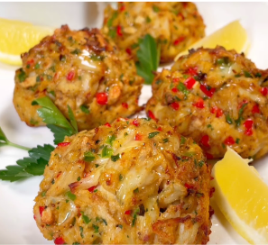

Low Carb Crab Cakes

Ingredients
Crab Cakes
8oz canned jumbo lump crab meat
6 Low carb crackers, crumbled
Sauce
Instructions
Gently combine, refrigerate 1 hr, strain then form into 4 balls.
Placed on a lightly oiled baking sheet and bake 425° 10 min then under broiler for 3 min for an extra
crispy crust